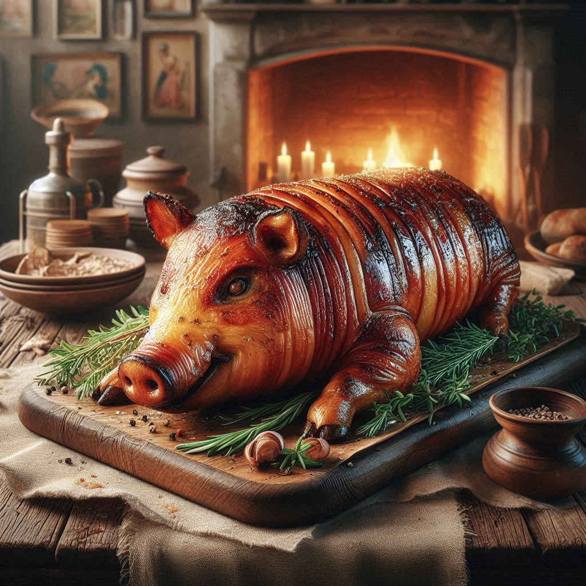

Porceddu alla barbaricina

Description
Probably the most representative dish of the island. Look at how fucking creepy this AI rendering of porceddu is. Hilarious
Ingredients:
- Suckling pig, 6/7 kg whole, for the softest meat
- Salt
- Black pepper
- Myrtle strands with leaves for aroma
Method:
Porceddu is traditionally roasted over coals, starting from relatively far using only radiated heat from the embers, slowli getting the meat closer to the fire. To finish it and make the skin crispy, the last 30 minutes should be at a higher temperature. In my house it is normally roasted with a rotating skewer in front of the fireplace, respecting the temperature dynamic as earlier explained.
Since it is very difficult nowadays to have such a setup for the cooking process, I am going to list a method to achieve a similar result using a regular oven. The young pig should be room temperature before the cooking starts. Can be halved or whole, as long as it's split and can be laid skin side up
- Preheat the oven to 150 degrees. Pat dry the pig skin, then coat with a little oil or lard, then place the pig on a baking tray, skin side up.
- Cook the pig for about three hours, making sure the skin doesn't brown up beforehand; if it does, cover with aluminum foil.
- Halfway through cooking, salt and pepper the inside of the pig, carefully flipping it back to it's skin side up
- Once the three hours have passed and it feels soft to the touch, raise the temperature to 200 degrees to crisp up the skin
- Once the skin is crispy, lay the pig on a bed of myrtle leaves and thin strands, then cover with more of them and a cloth for about 15 minutes, to infuse it with the leaves scent
- It is now ready to eat, so cut it with rotisserie scissors or a knife, and serve with abundant red wine.
Buon appetito!
Home